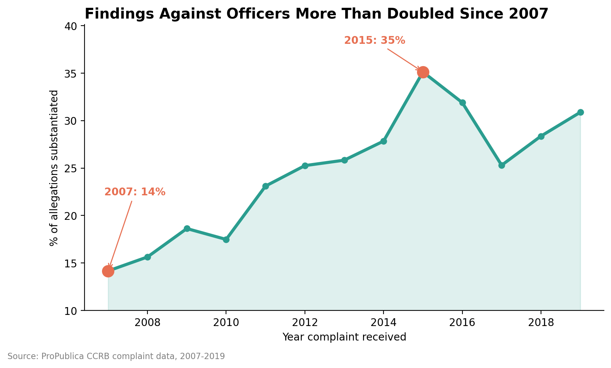
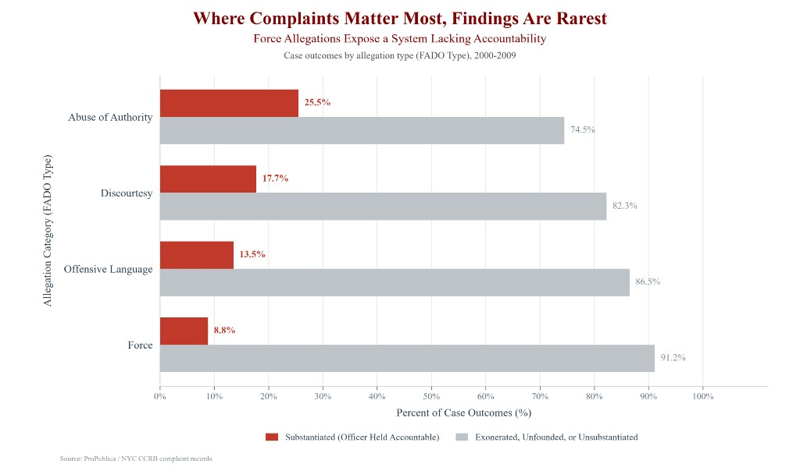

Proposition: The NYPD’s civilian complaint system holds officers accountable.
FOR the Proposition

Design Decisions and Rationale:
-
Decision 1: Starting the Timeline at the 2007 Low and Omitting Earlier Years
- Deception Score: -1.5 (Deceptive)
- Rationale: I limited the chart to 2007–2019, which begins at the lowest point since 1995 (14.2%). In most years from 1995 to 2004 the rate was already about 27–31%, so the rise is largely a recovery from a trough, not a new trend. Starting at the low point makes the improvement look much bigger and supports the claim that accountability is growing. I considered showing 1995–2019, but the earlier high rates made the story look flat or declining, which weakened the pro argument.
-
Decision 2: Zoomed-In Y-Axis Starting at 10%
- Deception Score: -1.0 (Moderately Deceptive)
- Rationale: I started the y-axis at 10% instead of 0% and capped it just above the maximum. This makes the climb from 14% to 35% look steeper while still looking like a normal chart, since the axis is labeled and not extremely truncated. I considered a 0–100% axis, but it flattened the line and made the increase hard to see.
-
Decision 3: Orange Highlights and Headline Framing
- Deception Score: -0.5 (Slightly Deceptive)
- Rationale: I marked 2007 and 2015 with large orange dots and labels, and titled the chart "Findings Against Officers More Than Doubled Since 2007." The color and title direct the eye to the two most favorable points, so the drop after 2015 (to 25.3% in 2017) gets less attention. The claim is accurate, but the emphasis is selective. I considered a neutral title, but it didn't deliver the persuasive stance required for the pro side.
-
Decision 4: Accurate Calculation, Labeled Axes, and a Source Line
- Deception Score: +1.0 (Earnest)
- Rationale: I calculated the percentage of allegations that were substantiated for each year the complaint was received, and I labeled both axes and cited ProPublica as the source. The numbers are correct and a reader can check them. I also considered the complaint-level rate (17.5% in 2007 to 49.9% in 2015), which also more than doubles. I kept the allegation-level rate because the complaint-level line climbs to 54% in 2019, a year that is incomplete because of unclosed cases, so that endpoint is harder to defend.
Data transformation
We collapsed the allegation-level file into one row per complaint with a groupby on complaint_id and a calculated flag, "any substantiated allegation." Overall, 24.9% of allegations are substantiated, but 32.0% of complaints contain at least one substantiated allegation, a 7-point swing from the denominator alone. Viz 2 uses the allegation-level column.
| Year | Allegation-level | Complaint-level |
|---|---|---|
| 2007 | 14.2% | 17.5% |
| 2008 | 15.6% | 18.7% |
| 2009 | 18.6% | 23.0% |
| 2010 | 17.5% | 21.0% |
| 2011 | 23.1% | 29.7% |
| 2012 | 25.3% | 32.3% |
| 2013 | 25.8% | 34.2% |
| 2014 | 27.8% | 38.2% |
| 2015 | 35.1% | 49.9% |
| 2016 | 31.9% | 43.5% |
| 2017 | 25.3% | 40.1% |
| 2018 | 28.4% | 46.8% |
| 2019 | 30.9% | 54.1% |
| All years | 24.9% | 32.0% |
AGAINST the Proposition

Design Decisions and Rationale:
-
Decision 1: Grouping "Exonerated," "Unfounded," and "Unsubstantiated" into a Single Monolithic Baseline
- Deception Score: -1.0 (Moderately Deceptive)
- Rationale: I combined three distinct investigative outcomes (Exonerated, meaning lawful action; Unfounded, meaning the act did not occur; and Unsubstantiated, meaning insufficient evidence) into a single gray bar labeled "Exonerated, Unfounded, or Unsubstantiated." While showing the separate categories was considered, splitting them up diluted the visual impact. Grouping them created a massive gray baseline reaching 91.2%, effectively erasing the nuance of officers who followed protocol and making systemic impunity look virtually universal.
-
Decision 2: Temporal Bounding to the 2000–2009 Window
- Deception Score: -0.5 (Slightly Deceptive)
- Rationale: I narrowed the timeframe to complaints from 2000 to 2009 instead of showing the full 1985 to 2020 record. This makes the graphic much more persuasive against the proposition because the substantiation rate drops from a multi-decade average of 12.8% down to 8.8%, highlighting systemic failure during a decade of heavy policing. Using the whole timeline was considered, but other decades had higher rates that softened the critique. Sticking to 2000 to 2009 hit the lowest possible number while still being technically accurate under the subtitle.
-
Decision 3: Asymmetric Color Hierarchy and Saliency Encoding
- Deception Score: 0.5 (Slightly Earnest)
- Rationale: I used a bright, attention-grabbing red for "Substantiated" cases and a dull light gray for the others. This draws the eye straight to the red bars, making it easy to see how tiny they look next to the huge block of gray. A normal neutral color palette was tested, but it made both outcomes look equally important. The red-and-gray contrast instantly frames substantiation as the missing, broken piece of the discipline system.
-
Decision 4: Normative Framing in Title and Subtitle Typography
- Deception Score: -1.0 (Moderately Deceptive)
- Rationale: Instead of using a plain label like "Distribution of Allegation Outcomes," I used a loaded headline in dark red: "Where Complaints Matter Most, Findings Are Rarest: Force Allegations Expose a System Lacking Accountability." This tells people how to read the chart before they even look at the numbers, framing low substantiation as proof of a broken system rather than just unproven or baseless complaints. A neutral title was considered, but it didn't push the persuasive message needed for the anti-proposition goal.
Data transformation
We collapsed board_disposition into two buckets: any outcome that starts with "Substantiated" stayed substantiated, and "Exonerated," "Unfounded," and "Unsubstantiated" were merged into one non-accountable category with np.where(df['board_disposition'].str.startswith('Substantiated'), 'Substantiated (Officer Held Accountable)', 'Exonerated, Unfounded, or Unsubstantiated'). That grouping turns three legally distinct findings into a single gray baseline, so Force reads as 8.8% substantiated versus 91.2% not. The chart uses allegation-level rows grouped by fado_type.
We then bounded the file to complaints received in 2000–2009 with df[(df['year_received'] >= 2000) & (df['year_received'] <= 2009)]. The same Force substantiation rate is 12.8% over the full 1985–2020 record and 8.8% inside this window.
| Time window | Force substantiated |
|---|---|
| 1985–2020 | 12.8% |
| 2000–2009 | 8.8% |
Final Reflection
[WRITE FINAL REFLECTION PARAGRAPHS HERE.]